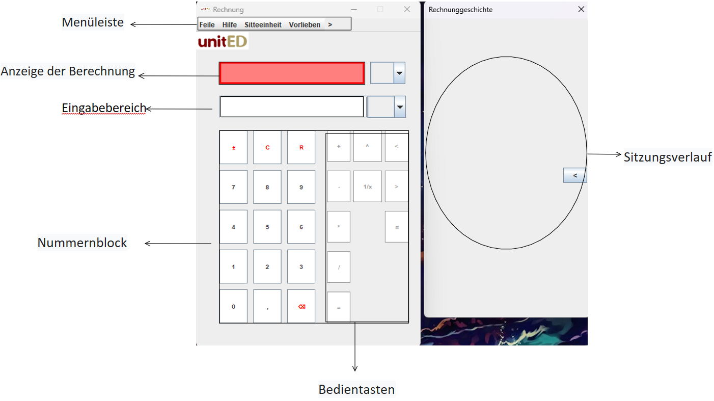
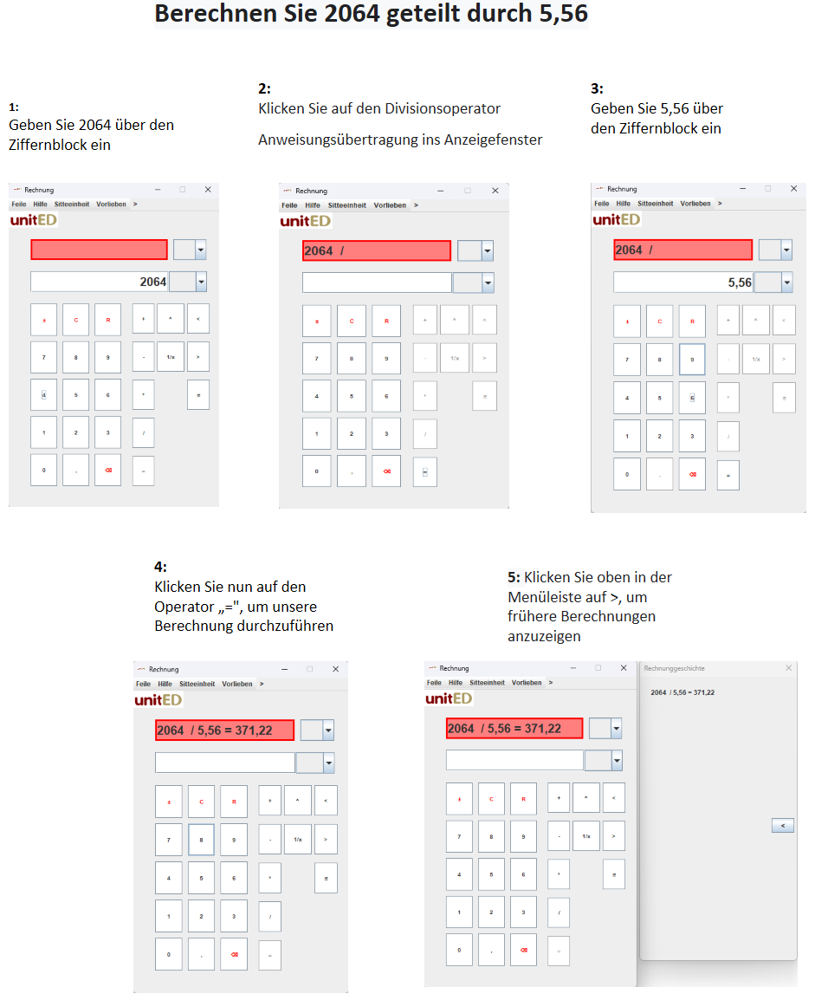
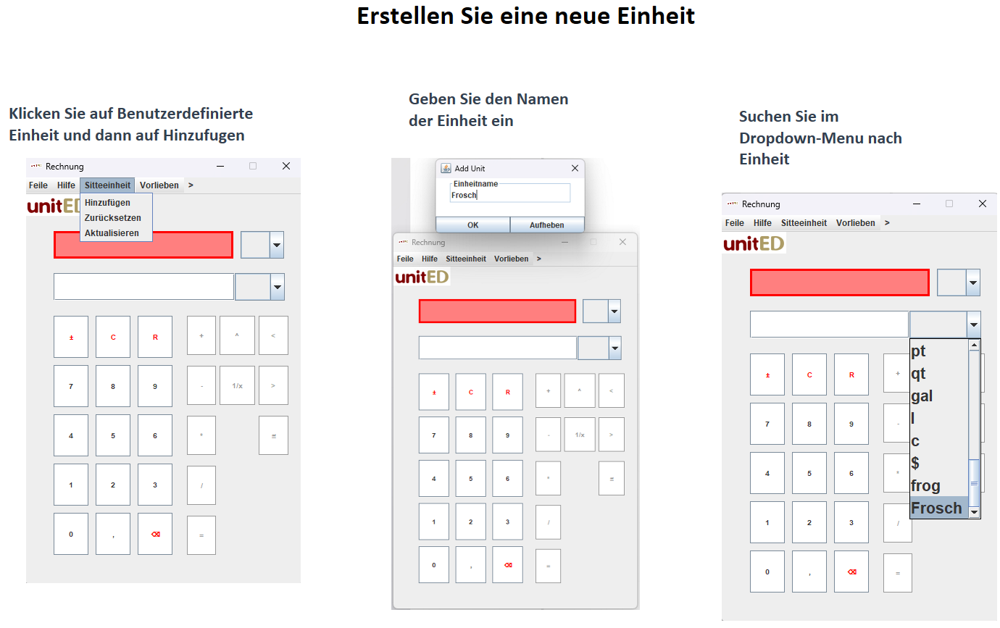
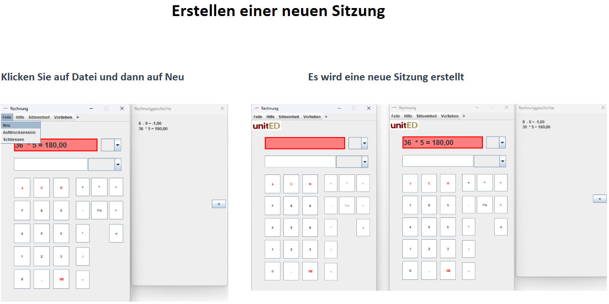

Menüleiste: Die Menüleiste enthält verschiedene Optionen zur Konfiguration des Rechners.
Tasten: Jede Taste auf dem Rechner führt eine bestimmte Operation aus. Mit der Additionstaste (+) werden beispielsweise zwei Zahlen addiert.

Um grundlegende Berechnungen durchzuführen, verwenden Sie den Ziffernblock zur Eingabe von Werten und die entsprechenden Bedientasten (+, -, *, /, =).
Um Ihre gewünschte Gleichung richtig zu berechnen, beenden Sie die Anweisung mit einem „=“, um die Berechnung anzuzeigen.
Sehen Sie sich die Abbildungen unten an, um zu sehen, wie der Rechner verwendet werden kann.

Erstellen neuer Einheiten: Um eine neue Einheit zu erstellen, klicken Sie auf die Schaltfläche „Neue Einheit erstellen“ und anschließend auf den gewünschten Einheitentitel.
Sitzungsverlauf drucken: Um den Sitzungsverlauf zu drucken, gehen Sie zur Menüleiste und wählen Sie die Option „Drucken“.
Sitzungsverlauf anzeigen: Um den Sitzungsverlauf anzuzeigen, navigieren Sie zur Menüleiste und wählen Sie die Option „Verlauf“.
Starting a New Session: To start a new session, click on "file" then "new" and a new session will start.
Visuell Sehen Sie sich unten die visuelle Hilfe an, um die Erstellung neuer Einheiten zu sehen und eine neue Sitzung zu starten.


Wenn Sie auf Probleme stoßen, beenden Sie die Taschenrechner-App und starten Sie sie neu.
Q: Wie lösche ich den Speicher des Rechners?
A: Um den Speicher des Rechners zu löschen, drücken Sie die Schaltfläche „Löschen“..
Q: Kann ich mit Dezimalzahlen rechnen?
A: Ja, Sie können mit dem Komma-Schaltfläche (,) Berechnungen mit Dezimalzahlen durchführen.
Q: Wie kann ich zwischen verschiedenen Einheitensystemen wechseln?
A: Um zwischen den Einheitensystemen zu wechseln, gehen Sie zur Menüleiste und wählen Sie das gewünschte Einheitensystem aus.
Q: Gibt es eine Möglichkeit, Berechnungen rückgängig zu machen oder zu wiederholen?
A: Der Rechner verfügt nicht über eine Rückgängig- oder Wiederherstellungsfunktion, aber die Lösch- und Reset-Taste löscht die Anzeige.
Q: Wie kann ich eine eigene Einheit nutzen?
A: Sie können Ihre eigene Einheit erstellen, indem Sie auf „Benutzerdefinierte Einheiten“ und dann auf „Benutzerdefinierte Einheit hinzufügen“ klicken.